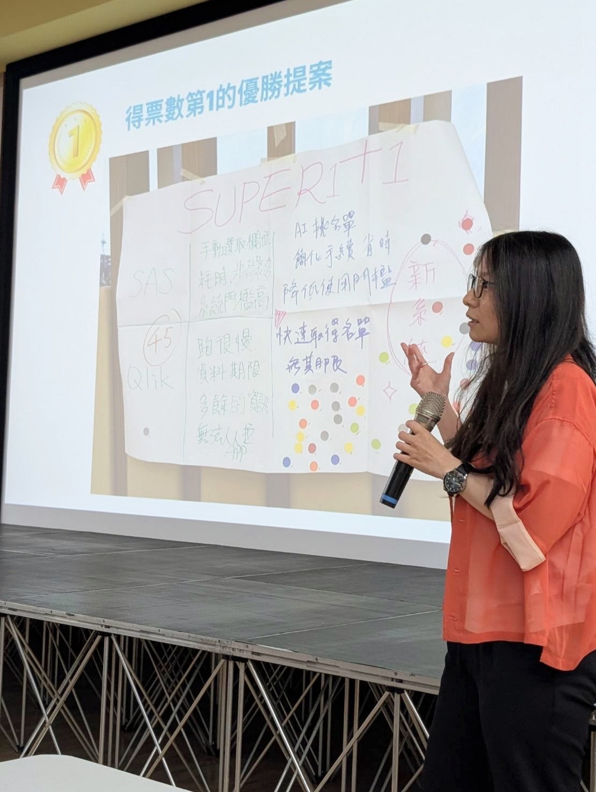

Cover Letter
自 傳
關於我與轉職歷程
您好，我是曾巧庭，個性活潑外向，做事認真負責。大學就讀資訊傳播系，畢業後投入影音後製工作約七年。某次偶然看到網路平台能針對每位用戶精準推薦內容，讓我對大數據與演算法產生強烈好奇——這份好奇心成為轉職的起點。2021 年參加緯育 AI 大數據養成班，系統學習 Python、SQL、ETL、Docker 與機器學習，並完成書籍推薦系統專題。遇到困難時習慣先自行研究，享受解決問題的成就感，之後更以在職進修方式完成國立中興大學應用數學系碩士學位。
工作成果
先於雄獅資訊任職約一年半，負責 SQL 開發、SP 撰寫、ETL 自動排程與 Power BI 報表製作。目前在鼎鼎聯合行銷（遠東集團 Happy Go）擔任資料工程師，以 Azure Synapse 為核心資料庫，負責 Campaign 系統資料管道建置與維運。獨立開發「消費人數快查系統」，以 Python + SQL + HTML 實現端對端即時查詢服務，運用 ChatGPT API 自動產出用戶維度分析，獲總經理頒發獎狀肯定（2025.02）。另開發「AI 名單優化系統」，以自然語言驅動條件生成，獲公司「平台化思維」競賽第一名。此外發現業務手動跨系統彙整資料的重複性工作，主導設計自動化資料整合流程，協同業務與 IT 完成系統授權與防火牆開通，成功消除人工作業。

🏆 平台化思維競賽・第一名

⭐ 消費人數快查系統・獎狀
溝通與團隊合作
在日常與使用者溝通時，我習慣主動了解對方的痛點，再提出具體解決方案。曾協助業務同仁熟悉 Campaign 系統操作，整理教學流程並實際帶領各單位上手。也主動承接跨部門技術協調任務，遇到立場不同的情況，會先退一步理解對方真正的需求，透過討論找出雙方都能接受的方向——立場可以不同，但目標始終是解決問題。

⭐ HAPPY GO 新手導航站・獎狀
未來展望
離開雄獅後，我赴加拿大遊學 16 週，拓展英語能力與國際視野，旅居期間仍持續線上學習，不曾中斷對資料工程的熱情。目前正積極深入 AI Agent 與 LLM 應用工程，期望以紮實的資料工程底層能力為基礎，延伸至更智慧化的資料應用場景。期待能加入貴公司，以認真負責的態度與跨領域實作經歷，持續為團隊創造有價值的數據成果。再次感謝貴公司撥冗閱讀，期待有機會進一步交流。